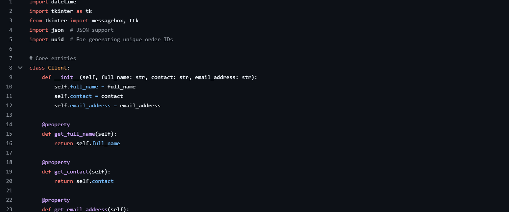
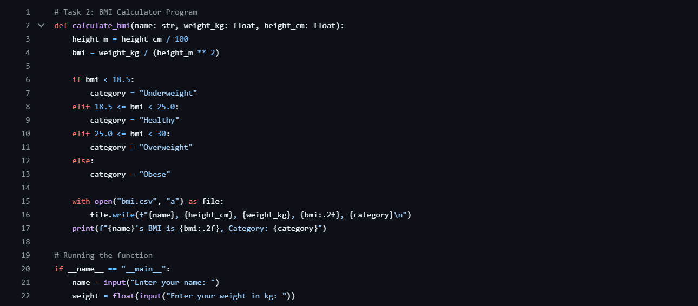
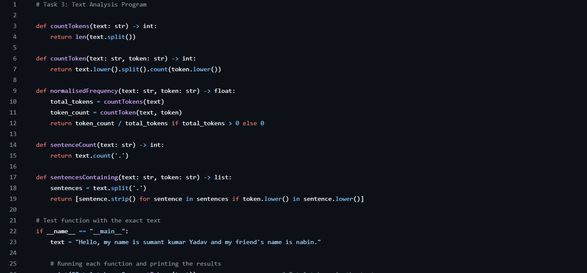
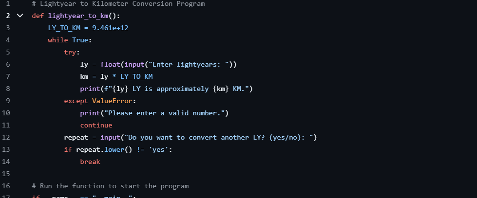

My Projects

GUI Book Ordering System
A graphical user interface application for managing book orders. This project demonstrates my ability to create user-friendly interfaces and handle data management in a practical context.
Python
Tkinter
JSON
View Code

BMI Calculator
An application that calculates Body Mass Index based on user input. Features a clean interface and provides health category classification.
Python
Math
View Code

Text Analysis Tool
A program that analyzes text input to provide statistics like word count, character frequency, and readability metrics.
Python
NLP
View Code

Light Year to KM Converter
A conversion tool that transforms light years into kilometers, demonstrating mathematical computation and user input handling.
Python
Math
View Code